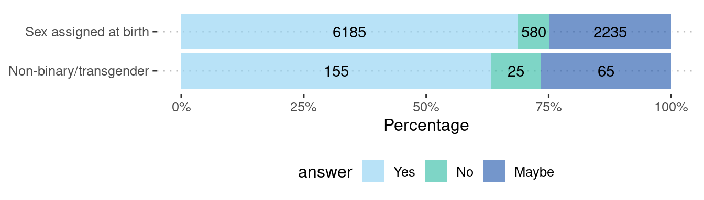
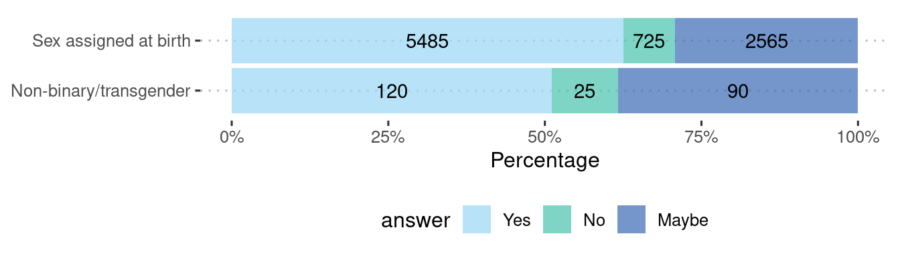
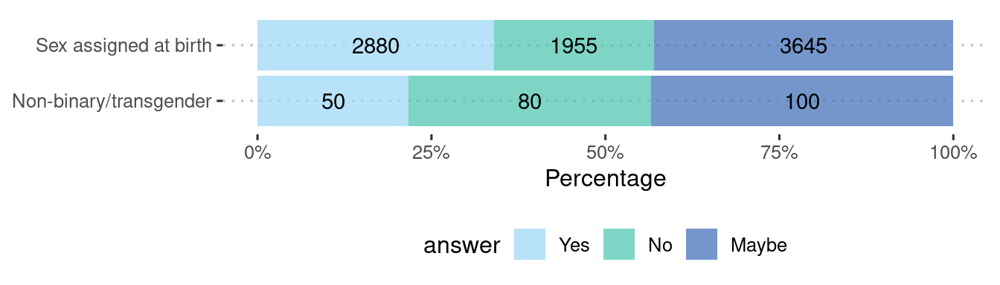

Abstract
Young LGBTQ+ students face different lived experiences than straight/heterosexual students. This could influence their decision-making around aspirations after leaving school, such as their career, education, or training. This brief analysis seeks to ascertain whether a student’s sexual orientation has a relationship with their aspirations after school.
| answer | number | % |
|---|---|---|
| Gay, lesbian or bisexual | 1035 | 9.3 |
| Heterosexual/Straight | 8445 | 75.7 |
| Other | 235 | 2.1 |
| Prefer not to say | 660 | 5.9 |
| Undecided/Questioning | 665 | 6.0 |
The above table displays the proportion of responses around sexual orientation in YPHWS. Heterosexual/straight students make up just over 3/4 of the total responses, followed by gay, lesbian, or bisexual at just under 10%. Smaller proportions ticked options other, undecided/questioning, and prefer not to say.
Here, we identify that a student’s sexual orientation has a very statistically significant relationship with pursuing a job/career, undertaking further training and with uncertainty in their career pathway after school.
Methods
One of the questions coded in the YPHWS survey is what do you plan to do as a next step after leaving school? This is a multi-factorial answer, where students can respond either yes, no, or maybe to several options:
Education
Job
Training
Family
Uncertain
Other
We performed a chi-squared test for each of the different prospects questions on the tables below for each of the responses, along with their relative proportions. Note, these numbers have been suppressed to the nearest 5 to prevent disclosure, but the actual chi-squared tests have been performed on the raw numbers.
For the purposes of this analysis, students who answered undecided/questioning and other are grouped together with students who answered gay, lesbian or bisexual. Students who answered prefer not to say were excluded, owing to the large difference in responses between this category and the other relevant categories.
More on chi-squared tests
We can put the results of students answering the question in YPHWS in a contingency table, which tallies the responses into a table like:
| Care-experienced | Maybe | No | Yes |
|---|---|---|---|
| Yes | |||
| Maybe | |||
| No |
With contingency tables, we can perform chi-square tests, which examines whether the categories of the rows and columns of a contingency table are statistically significantly associated.
The chi-squared test compares the observed frequencies from the data with expected frequencies if there were null or no relationship between the variables.
With chi-squared tests, we need sufficient size in each of the cells inside the table. While the number of students not care-experienced outnumber the number of students who answered prefer not to say or yes, there are still sufficient numbers to perform the test (>5) in each of the responses.
After the critical chi-squared test value is calculated, we then use the degrees of freedom to match the results on a distribution table with a significance threshold to determine statistical significance, usually set at 0.05. More about chi-squared tests can be found at: BMJ - The Chi squared tests
Students answering prefer not to say were omitted from the test.
Results
Table 2: Statistical Significance of Aspirational Pathways After School for Care-experienced Status in Students
| education | job | training | family | unsure | other |
|---|---|---|---|---|---|
| ❌ | ✅ | ✅ | ❌ | ✅ | ❌ |
Job/career
Table 3: Plan to get a job after leaving school
| sexuality | Maybe | No | Yes |
|---|---|---|---|
| Heterosexual | 2130 | 595 | 4725 |
| LGBQ+ | 595 | 175 | 975 |
| sexuality | Maybe | No | Yes |
|---|---|---|---|
| Heterosexual | 29% | 8% | 63% |
| LGBQ+ | 34% | 10% | 56% |
| Significance |
|---|
| very statistically significant |
Training
Table 4: Plan to train for a skilled job after leaving school
| sexuality | Maybe | No | Yes |
|---|---|---|---|
| Heterosexual | 3070 | 1590 | 2525 |
| LGBQ+ | 765 | 485 | 450 |
| sexuality | Maybe | No | Yes |
|---|---|---|---|
| Heterosexual | 43% | 22% | 35% |
| LGBQ+ | 45% | 29% | 26% |
| Significance |
|---|
| very statistically significant |
Uncertain
Table 5: Aren’t sure what they want to do after leaving school
| sexuality | Maybe | No | Yes |
|---|---|---|---|
| Heterosexual | 1875 | 3000 | 1940 |
| LGBQ+ | 445 | 610 | 620 |
| sexuality | Maybe | No | Yes |
|---|---|---|---|
| Heterosexual | 28% | 44% | 28% |
| LGBQ+ | 27% | 36% | 37% |
| Significance |
|---|
| very statistically significant |

Conclusions/implications
We identify that whether a student is straight/heterosexual or part of the LGBQ+ group has a very statistically significant effect with plans to get a job after leaving school, plans to pursue training, and uncertainty with what to do.
These results are noteworthy as they highlight that differences in certain students’ aspirational pathways can be influenced by their sexual orientation. This can be useful for stakeholders involved in the career development of high school students; factors such as diversity and inclusiveness in the workplace, workplace hostility, the costs of self-identity disclosure, self-identity confusion, and inadequate career counselling and guidance services need to be accounted for when considering differences between LGBQ+ and non LGBQ+ students.
More on the results
Below shows the chi-square tests applied to the contingency tables collated together:
| question | x^2 | p.value |
|---|---|---|
| education | 5.73 | 0.06 |
| job | 35.66 | 0.00 |
| training | 58.18 | 0.00 |
| family | 0.24 | 0.89 |
| unsure | 52.02 | 0.00 |
| other | 0.24 | 0.89 |
A p.value of less than 0.05 indicates statistical significance, and that there is a relationship between the student’s LGBTQ+ label and the specific prospect response.
A chi-squared test is a simple nonparametric test which only tells us of an association if statistical significance is found. Further analyses can be performed to elucidate further details on how or why the relationship between a student’s sexual orientation affects their decision for pursuing a job after leaving school, training, and uncertainty with what to do, but these are beyond the scope of this report.
Sub-analysis on transgender students
The crux of this analysis focuses on the sexual orientation of students, which is separate from that of biological sex. For the 2022 release of YPHWS, the survey redefined the question on biological sex to one around gender identity, which expanded the number of options available, allowing students to tick non-binary and transgender as responses.
These populations have received an increased of amount of news coverage in recent years, and research has shown they have differing health experiences and sociological outcomes. As a result, we performed an additional analysis on the non-binary and transgender population, with identical methodology as we have done those of LGBQ+ students above.
Sub-analysis results
| answer | number | % |
|---|---|---|
| Female | 5415 | 48.6 |
| Male | 4490 | 40.3 |
| Non-Binary | 150 | 1.3 |
| Other | 90 | 0.8 |
| Prefer not to say | 110 | 1.0 |
| Transgender | 120 | 1.1 |
Given relatively small numbers of the non-binary and transgender student population, these two categories were pooled together. Female and male are grouped into sex assigned at birth. Students who answered other and prefer not to say were excluded.
Table 7: Statistical Significance of Aspirational Pathways After School for Care-experienced Status in Students
| education | job | training | family | unsure | other |
|---|---|---|---|---|---|
| ✅ | ✅ | ✅ | ❌ | ✅ | ❌ |
Education
Table 8: Plan to pursue further education after leaving school
| sexuality | Maybe | No | Yes |
|---|---|---|---|
| Non-binary/transgender | 65 | 25 | 155 |
| Sex assigned at birth | 2235 | 580 | 6185 |
| sexuality | Maybe | No | Yes |
|---|---|---|---|
| Non-binary/transgender | 27% | 10% | 63% |
| Sex assigned at birth | 25% | 6% | 69% |
| Significance |
|---|
| very statistically significant |

Job/career
Table 9: Plan to get a job after leaving school
| sexuality | Maybe | No | Yes |
|---|---|---|---|
| Non-binary/transgender | 90 | 25 | 120 |
| Sex assigned at birth | 2565 | 725 | 5485 |
| sexuality | Maybe | No | Yes |
|---|---|---|---|
| Non-binary/transgender | 38% | 11% | 51% |
| Sex assigned at birth | 29% | 8% | 63% |
| Significance |
|---|
| very statistically significant |

Training
Table 10: Plan to train for a skilled job after leaving school
| sexuality | Maybe | No | Yes |
|---|---|---|---|
| Non-binary/transgender | 100 | 80 | 50 |
| Sex assigned at birth | 3645 | 1955 | 2880 |
| sexuality | Maybe | No | Yes |
|---|---|---|---|
| Non-binary/transgender | 43% | 35% | 22% |
| Sex assigned at birth | 43% | 23% | 34% |
| Significance |
|---|
| very statistically significant |

Uncertain
Table 11: Aren’t sure what they want to do after leaving school
| sexuality | Maybe | No | Yes |
|---|---|---|---|
| Non-binary/transgender | 50 | 80 | 100 |
| Sex assigned at birth | 2235 | 3465 | 2390 |
| sexuality | Maybe | No | Yes |
|---|---|---|---|
| Non-binary/transgender | 22% | 35% | 43% |
| Sex assigned at birth | 28% | 43% | 30% |
| Significance |
|---|
| very statistically significant |
From the chi-squared test results, there are very statistically significant relationships with non-binary/transgender status and career aspirations in pursuing further education, pursuing a job/career, pursuing further training and uncertainty. What is noticeable is that for non-binary/transgender students, the proportion answering yes is below those of students identifying with their sex assigned at birth for pursuing further education, job/career, further training, but not uncertainty, highlighting the more precarious nature of non-binary and transgender student’s livlihoods after secondary education.